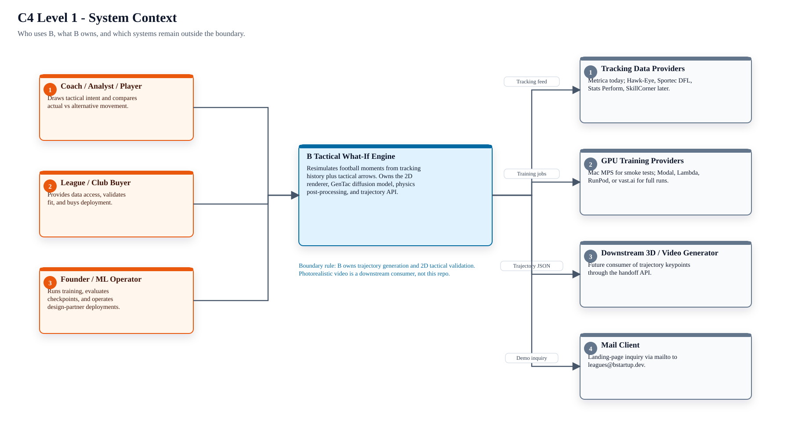
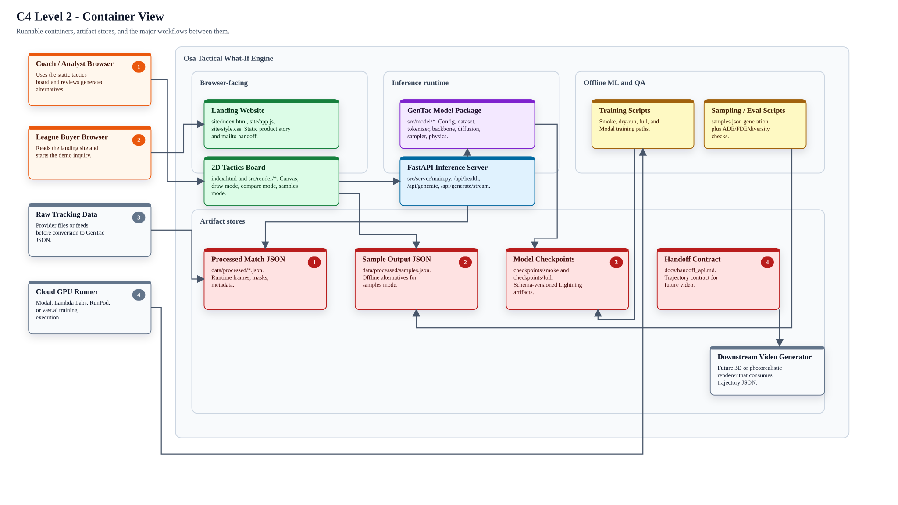
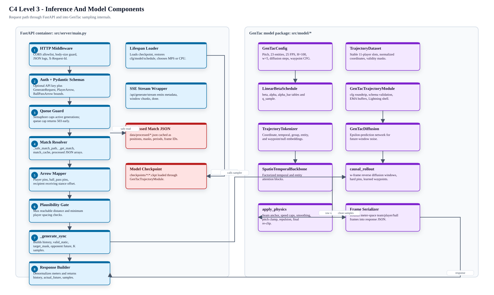
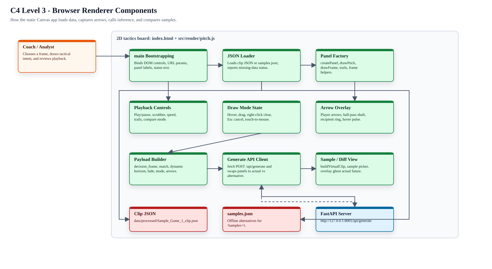
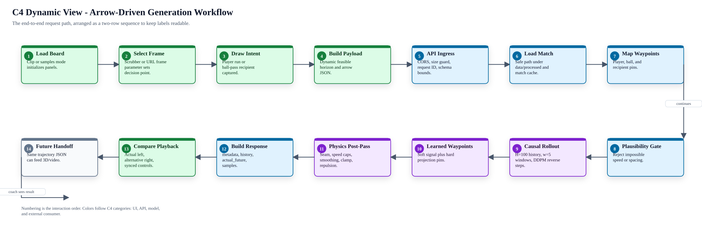
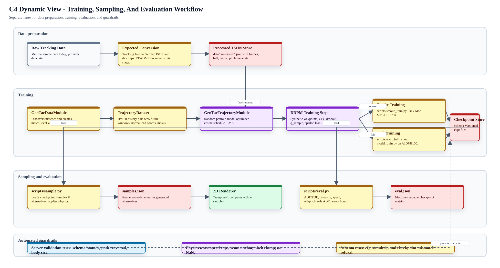
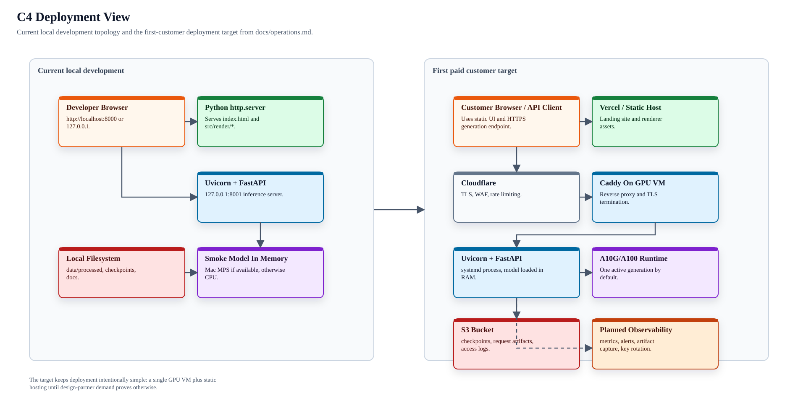

Osa Tactical What-If Engine - C4 Workflow Diagrams
Browser-friendly rendered C4 views for the project workflow. The source SVGs are rendered from a fixed-layout source file so boxes and connectors stay readable without overlaps.
C4 Level 1 - System Context

C4 Level 2 - Container View

C4 Level 3 - Inference And Model Components

C4 Level 3 - Browser Renderer Components

C4 Dynamic View - Arrow-Driven Generation Workflow

C4 Dynamic View - Training, Sampling, And Evaluation Workflow

C4 Deployment View - Current Local State And First-Customer Target
